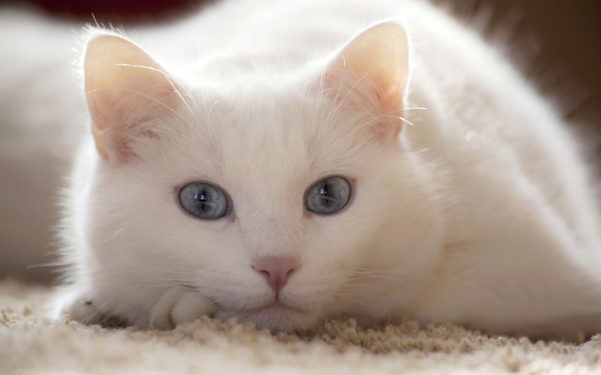
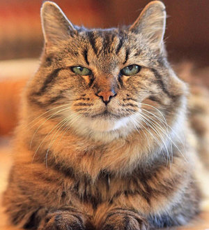

- Возраст: 6 месяцев
- Порода: нет
- Болезни: нет
Статус: в поисках
Борька игрвый мальчишка, постояно ищет приключения
на свой пушистый зад. Но проблем не создает.
Акуратный и ласковый пацан.

- Возраст: 2 года
- Порода: нет
- Болезни: нет
Статус: в поисках
Карл добрый, толстый и любит есть. Много, часто,
всегда.

- Возраст: 8 месяцев
- Порода: Драконорожденный
- Болезни: нет
Статус: в поисках железного трона
Арчибальт. Просто Арчибальт. Если его злить, то он
натравит на тебя своих летающих дружков.

- Возраст: 3 года
- Порода: нет
- Болезни: нет
Статус: в поисках
Просто Кот. Делает кошачьи дела. Спит, играет, ест.
А что еще должен делать кот?